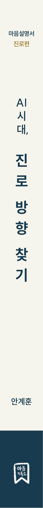
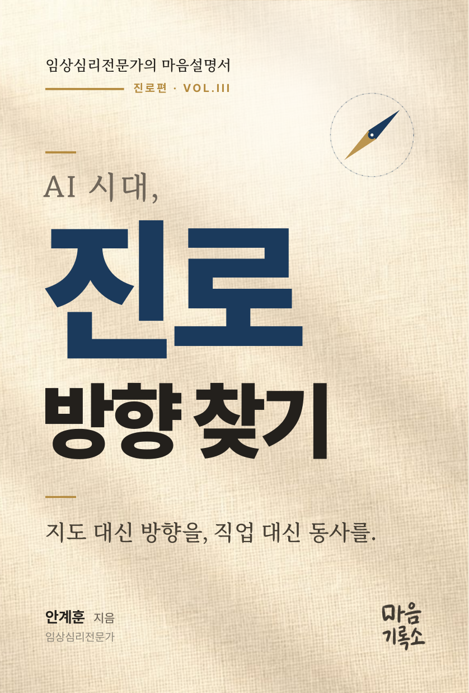
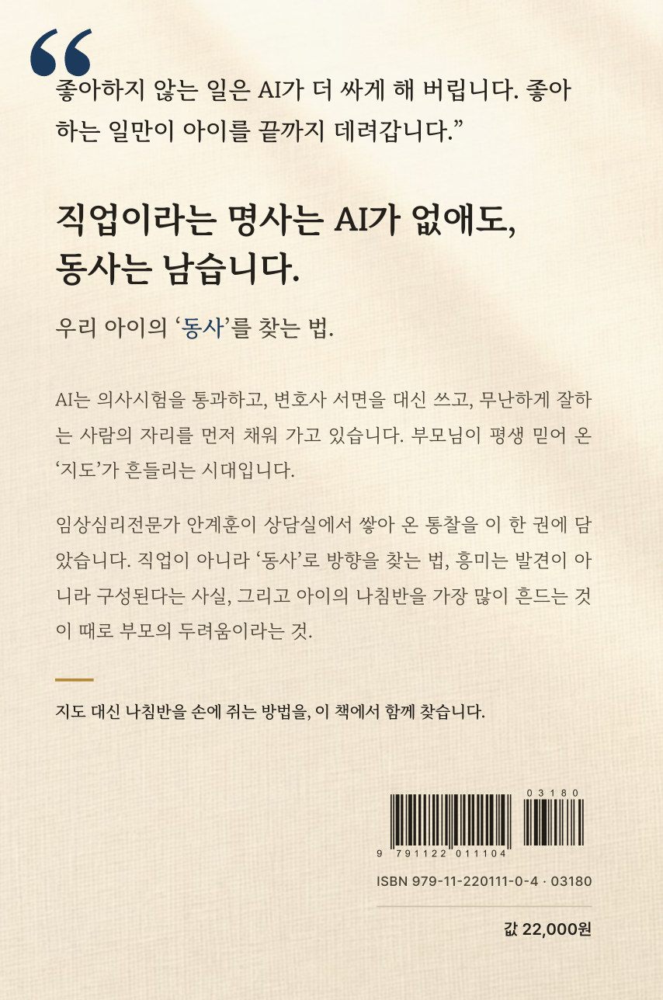

책
마음을 이해하고 삶의 방향을 찾는 데 오래 곁에 둘 책을 만듭니다.



좌우로 밀어 책을 돌려보세요
현재 앞표지입니다.
2026년 9월 출간 예정
AI 시대,
진로 방향 찾기
임상심리전문가의 마음설명서: 진로편
- 저자
- 안계훈
- 출간
- 2026년 9월 예정
변하는 직업 지도를 외우기보다 아이가 무엇에 끌리고, 어떤 방식으로 움직이며, 끝까지 가게 하는 힘은 무엇인지 함께 읽도록 돕는 책입니다. 흥미·성향·성격을 하나의 진로 지도에 모으고, 부모가 답을 정하는 대신 아이의 나침반을 지키는 방법을 이야기합니다.
서점에서 검색
출간 예정 도서입니다. 각 서점의 검색 결과에서 판매 여부를 확인해 주세요.
차례
프롤로그 · 지도가 사라진 시대, 나침반을 꺼내라발췌 읽기
1부 · 흥미 발견하기
- 아이의 나침반을 흔드는 건, 부모의 두려움입니다
- 직업 명사가 아닌 ‘동사’를 찾아라
- 여섯 풍경, 우리 아이는 어디에 끌리는가
- 좋아하는 게 없는 아이는 없습니다
2부 · 성향 읽기
- 우리 아이의 성향을 읽는 네 개의 눈금
- 같은 심해를 좋아해도, 한 아이는 넓게 한 아이는 깊게 갑니다
- 아이를 답답해하는 그 마음, 사실은 부모님 것입니다
3부 · 성격 다지기
- 같은 씨앗인데, 왜 다른 어른이 될까
- 잘 빠지는 부모가, 잘 키우는 부모입니다
4부 · 지도로 통합하기
- 다른 집 거실을 들여다보면 우리 집이 보입니다
- 가까이 있다가, 천천히 멀어지세요
- 책을 덮어도 끝내 남는 11가지 질문
에필로그와 부록
- 아이라는 우주를 항해하는 선장들에게
- 홀랜드 6가지 흥미 코드 요약 카드
- AI 시대 직업 풍경 60선
- 탐험가 비유 체계 한눈에 보기
이어질 책
바꿀 수 없는 기질 이해하기준비 중
숫자 너머 지능 다시읽기준비 중